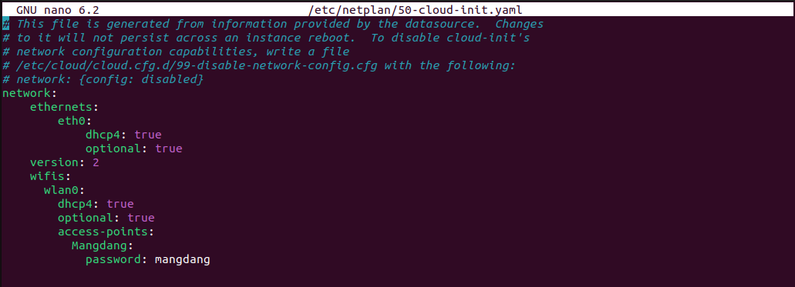
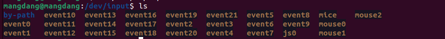
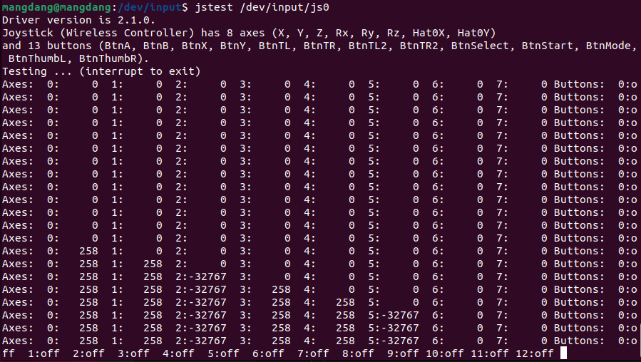
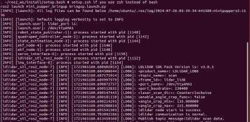
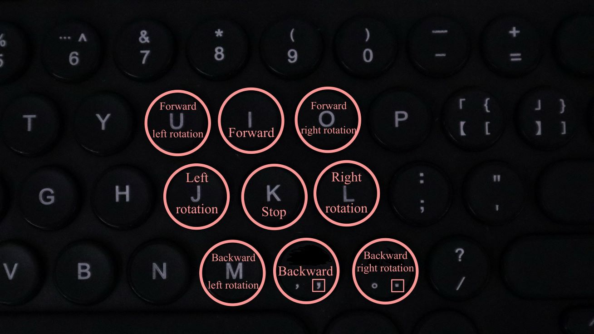
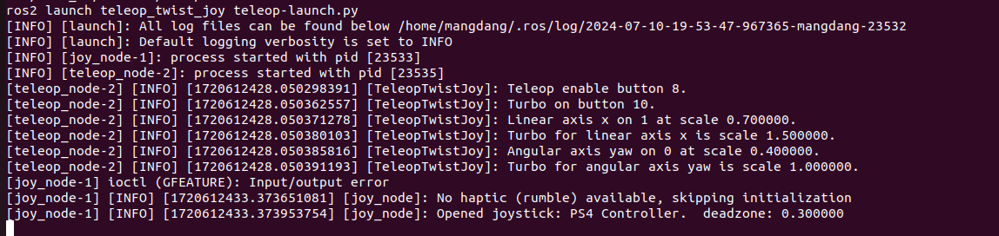
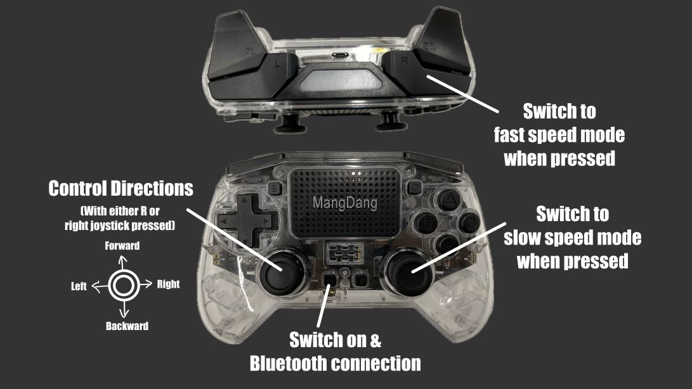
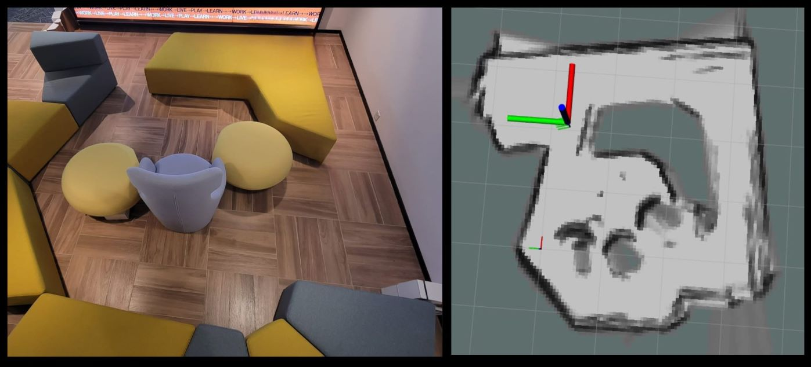
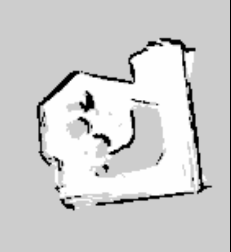
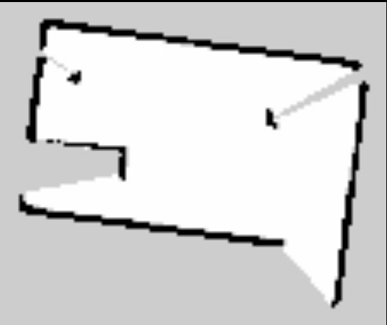

ROS2ガイド
インストール
Mini PupperのROS2インストールパッケージは、私たちのコントリビューターの一人である@Tiryohによって書かれたros2_setup_scriptsに基づいています。
Mini PupperのROS2バージョンはChampオープンソースプロジェクトをベースにしており、SLAMとナビゲーション機能にいくつかの変更を加えました。
ライダーセンサーをサポートするMini Pupperのソフトウェアは、ldlidar_stl_ros2オープンソースプロジェクトに基づいています。
PCとMini Pupperが同じWiFiに接続されていることを確認してください。
以下のステップで、リモートPCとMini Pupperのros2をセットアップすることができます。
1.PCセットアップ
PCセットアップはMini PupperをリモートコントロールするためのPC（デスクトップまたはラップトップPC）に対応しています。これらのコマンドをMini Pupperに適用しないでください。
警告：本章の内容は、Mini Pupperを制御するリモートPC（デスクトップまたはラップトップPC）に対応しています。これらのコマンドをMini Pupper上のRaspberry PiやMini Pupper 2上のCompute Module 4に適用しないでください。
注：この説明はLinuxのUbuntu 22.04とROS2 Humbleでテストしました。
1.1 ROSのインストール 2Humble
リモートPCからCtrl+Alt+Tでターミナルを開く。
cd ~
sudo apt update
git clone https://github.com/Tiryoh/ros2_setup_scripts_ubuntu.git
~/ros2_setup_scripts_ubuntu/ros2-humble-ros-base-main.sh
source /opt/ros/humble/setup.bash
ROS 2のインストール後、ワークスペースでMini Pupper ROSパッケージをダウンロードします。
1.2 Mini Pupper ROSリポジトリのインストール
リモートPCからCtrl+Alt+Tでターミナルを開く。
mkdir -p ~/ros2_ws/src
cd ~/ros2_ws/src
git clone https://github.com/mangdangroboticsclub/mini_pupper_ros.git -b ros2-dev mini_pupper_ros
vcs import < mini_pupper_ros/.minipupper.repos --recursive
1.3 依存する ROS 2 パッケージのインストールとパッケージのビルド
リモートPCからCtrl+Alt+Tでターミナルを開く。
cd ~/ros2_ws
rosdep install --from-paths src --ignore-src -r -y
sudo apt install ros-humble-teleop-twist-keyboard
sudo apt install ros-humble-teleop-twist-joy
colcon build --symlink-install
1.4.輸出ロボットモデル
ターミナルで~/.bashrcをテキストエディタで開く。
nano ~/.bashrc
ファイルの最後までスクロールする。
以下の行を追加して、ロボットモデルをコンピュータにエクスポートしてください。ROBOT_MODELパラメータには、あなたのロボットモデルに合わせて、mini_pupper, mini_pupper_2の中から適切なキーワードを使用してください。
export ROBOT_MODEL=mini_pupper_2
Ctrl+Sでファイルを保存し、Ctrl+Xで終了する。
以下のコマンドを実行して変更を適用する。
source ~/.bashrc
2.Mini Pupperセットアップ
2.1 画像点滅
以下の手順はMini PupperのROS2環境をご自身でセットアップするためのものです。 また、Mini Pupper側でビルド済みのROSイメージ（"YYYYMMDD_MD-Puppy2_ROS2Humble_Ubuntu22.04.img "または "YYYYMMDD_MD-Puppy1_ROS2Humble_Ubuntu22.04.img"）をダウンロードすることもできます。日付とロボットの機種に応じて適切なイメージを選択してください。
イメージはアダプターを使用してカードにフラッシュすることができます。PCにmicroSDスロットがない場合は、microSDカードリーダーを使用してイメージを書き込んでください。
公式サイトからubuntu-22.04.2-preinstalled-server-arm64+raspi.img.xzをダウンロードし、以下のガイドに従ってSDカードにフラッシュする。
https://etcher.balena.io/、balenaEtcherをダウンロードしてください。
青いボタンを押して、画像のダウンロード先を選択し、画像を選択します。
青いボタンを押して、画像をフラッシュする先（SDカードのアドレス）を選択します。
フラッシュボタンを押すと、下の画像が表示されます。プロセスが完了するまで待ちます。
2.2Wifi設定
カードをMini Pupperカードポートに差し込み、独自の無線LANをセットアップする。
以下のコマンドを実行して、パッパーのネットワーク設定を編集します。
sudo nano /etc/netplan/50-cloud-init.yaml
エディターが開いたら、Mangdangとmangdangを実際の無線LANのSSIDとパスワードに置き換えながら、以下のように内容を編集してください。
Ctrl+Sでファイルを保存し、Ctrl+Xで終了する。
以下のコマンドを実行して再起動し、実際の無線LANに接続する。
sudo netplan apply
sudo apt update
sudo apt upgrade
reboot
2.3 ロボットモデルの設定
再起動後、ターミナルで~/.bashrcをテキストエディタで開く。
nano ~/.bashrc
ファイルの最後までスクロールする。
以下の行を追加して、ロボットモデルをコンピュータにエクスポートしてください。ROBOT_MODELパラメータには、あなたのロボットモデルに合わせて、mini_pupper, mini_pupper_2の中から適切なキーワードを使用してください。
export ROBOT_MODEL=mini_pupper_2
Ctrl+Sでファイルを保存し、Ctrl+Xで終了する。
以下のコマンドを実行して変更を適用する。
source ~/.bashrc
3.Mini PupperとPCの接続
Ctrl+Alt+Tで2つのターミナルを2回開きます。1つはMini Pupperに接続するため、もう1つはPCローカル用です。
Mini Pupperのモニターを見て、IPアドレスを取得する。
ターミナルを使用し、以下のコマンドを実行してMini Pupperに接続してください。デフォルトのパスワードは "mangdang "です。
ssh ubuntu@{IP_ADDRESS_OF_MINI_PUPPER}
両方のターミナルで~/.bashrcをテキストエディタで開く。
nano ~/.bashrc
両端末のファイルを最後までスクロールする。
両端末に以下の行を追加して接続を設定する。入力される数字はどのようなものでも構いませんが、両端末で同じでなければなりません。
export ROS_DOMAIN_ID=42
Ctrl+Sでファイルを保存し、Ctrl+Xで終了する。
以下のコマンドを実行して変更を適用する。
source ~/.bashrc
両方のターミナルで以下のコマンドを使用し、PCとMini Pupperが接続されていることを確認します：
ros2 node list
両端子の出力を比較する：
両端末の出力が画像と同じようなノードリストを表示していれば、PCとMini Pupperは接続されています。
注意：ノードのリストは進行中のノードに依存し、画像とまったく同じではないかもしれない。
クイックスタート
1.ジョイスティック設定
以下の手順で、ジョイスティックにROS2ソフトウェアを接続し、設定することができます。
コントローラの HOME ボタンを押す。
あなたのPC上で利用可能なBluetoothデバイスを検索し、それに接続します。
下のビデオは、接続中のフラッシュライトの色の変化を示しています。
以下のコマンドでジョイスティックの名前を確認する。
ターミナルの出力：この場合、ジョイスティックの名前は "js0 "である。
以下のコマンドで、ジョイスティックが接続されているかどうかを確認する。
sudo apt install joystick
jstest /dev/input/{NAME_OF_JOYSTICK}
ジョイスティックが接続されている場合は、次のような出力があります。
2.ブリングアップ
以下の手順でソフトウェアを起動し、Mini Pupperハードウェアを起動します。
Ctrl+Alt+T でターミナルを開き、Mini Pupper に接続します。
Mini Pupperのモニターを見て、IPアドレスを取得する。
いずれかのターミナルを使用し、以下のコマンドを実行してMini Pupperに接続します。デフォルトのパスワードはmangdangです。
ssh ubuntu@{IP_ADDRESS_OF_MINI_PUPPER}
Mini Pupperアプリケーションを起動するための基本パッケージを呼び出します。ビルドされたパッケージをソースするコマンド、「. ~/ros2_ws/install/setup.bash」は、「./ros2_ws/install/setup.zsh "に置き換えることができます。
. ~/ros2_ws/install/setup.bash
ros2 launch mini_pupper_bringup bringup.launch.py
ロボットモデルがMini Pupper 2の場合、ターミナル出力は以下のようになります。
トピックスやサービスは、以下のコマンドで一覧できます。
トピック一覧
ros2 topic list
サービス一覧
ros2 service list
3.テレオポレーション
以下の手順で、キーボードまたはジョイスティックを使ってMini Pupperを遠隔操作することができます。
警告：遠隔操作の前に、必ずMini Pupperからブリングアップを実行してください。ロボットを遠隔操作し、ロボットをテーブル上でテストする際は、ロボットが落下する可能性があるため注意してください。
3.1キーボード
リモートPCでCtrl+Alt+Tでターミナルを開く。
以下のコマンドを使用して、遠隔操作ノードを実行する。
. ~/ros2_ws/install/setup.bash
ros2 run teleop_twist_keyboard teleop_twist_keyboard
端子出力：

以下のガイドに従って、キーボードを使ってパッパーを運転することができます。
ビデオでは、各キーボードボタンがロボットの動きに与える影響を示している。
3.2ジョイスティック
注意: ROS2のジョイスティックノードのボタンのデザインは、他のセクションで述べられている、ROS以外のプログラムで使用されるものとは異なります。
警告：遠隔操作の前に、必ずMini Pupperからブリングアップを実行してください。ロボットを遠隔操作し、ロボットをテーブル上でテストする際は、ロボットが落下する可能性があるため注意してください。
リモートPCでCtrl+Alt+Tでターミナルを開く。
以下のコマンドを使用して、遠隔操作ノードを実行する。
. ~/ros2_ws/install/setup.bash
ros2 launch teleop_twist_joy teleop-launch.py joy_dev:=/dev/input/{NAME_OF_JOYSTICK}
端子出力：
以下のガイドに従って、ジョイスティックを使ってパッパーを運転することができます。
ビデオでは、ジョイスティックの各ボタンがロボットの動きに与える影響を示している。
SLAM
SLAM（Simultaneous Localization and Mapping）とは、任意の空間内の現在位置を推定して地図を描く技術です。以下の手順で、Mini Pupperを使って周辺地図を描画します。
注意：リモートPC上でSLAMノードを実行してください。操作を実行する前に、必ずMini Pupperからブリングアップを起動してください。
1.SLAMを実行するNode
Bringup が Mini Pupper で起動されていない場合は、まず Bringup を起動してください。
Ctrl+Alt+T でターミナルを開き、Mini Pupper に接続します。
Mini Pupperのモニターを見て、IPアドレスを取得する。
いずれかのターミナルを使用し、以下のコマンドを実行してMini Pupperに接続します。デフォルトのパスワードはmangdangです。
ssh ubuntu@{IP_ADDRESS_OF_MINI_PUPPER}
Mini Pupperのアプリケーションを開始するための基本パッケージを表示します。
. ~/ros2_ws/install/setup.bash
ros2 launch mini_pupper_bringup bringup.launch.py
リモートPCからCtrl + Alt + Tで新しいターミナルを開き、SLAMノードを起動する。
. ~/ros2_ws/install/setup.bash
ros2 launch mini_pupper_slam slam.launch.py
2.遠隔操作
以下の手順で、遠隔操作を使って地図上の未知のエリアを探索することができる。
注意：SLAMノードが正常に起動し、実行されると、直線速度と角速度を激しく変化させると、生成されるマップの平滑性が低下する可能性があります。直線速度と角速度を激しく変更すると、生成されるマップの滑らかさが低下する可能性があります。警告：遠隔操作の前に、必ずMini Pupperからブリングアップを実行してください。遠隔操作中にロボットが落下する可能性があるため、テーブル上でロボットをテストする際は注意してください。
2.1キーボード
リモートPCでCtrl+Alt+Tでターミナルを開く。
以下のコマンドを使用して、遠隔操作ノードを実行する。
. ~/ros2_ws/install/setup.bash
ros2 run teleop_twist_keyboard teleop_twist_keyboard
2.2ジョイスティック
リモートPCでCtrl+Alt+Tでターミナルを開く。
以下のコマンドを使用して、遠隔操作ノードを実行する。
. ~/ros2_ws/install/setup.bash
ros2 launch teleop_twist_joy teleop-launch.py joy_dev:=/dev/input/{NAME_OF_JOYSTICK}
遠隔操作の後、以下のように未知の領域が明らかになった地図が表示される：
3.地図を保存する
以下の手順に従って、地図のファイルが保存されます。
リモートPCでCtrl+Alt+Tでターミナルを開く。
次のコマンドを使用して、nav2_map_serverパッケージのmap_saver_cliノードを起動し、マップファイルを作成します。
マップ・ファイルはmap_saver_cliノードが起動したディレクトリに保存される。
. ~/ros2_ws/install/setup.bash
ros2 run nav2_map_server map_saver_cli -f ~/map
上記のコマンドを実行すると、map.pgmとmap.yamlという2つのファイルが生成される。
以下の写真は保存される.pgmファイルです。
シミュレーション
以下のステップでは、RVizとGazeboを使用して、Mini Pupperの遠隔操作、SLAM、ナビゲーションのシミュレーションを行います。
注意：リモートPCでシミュレーションを実行してください。
1.RVizシミュレーション
1.1 打ち上げシミュレーション世界
以下のコマンドを実行し、ロボットに接続せずにロボットシミュレーションを起動します。
. ~/ros2_ws/install/setup.bash
ros2 launch mini_pupper_bringup bringup.launch.py hardware_connected:=False
以下のコマンドを実行してRVizシミュレーションを起動します。
. ~/ros2_ws/install/setup.bash
ros2 launch mini_pupper_bringup rviz.launch.py
1.2.遠隔操作
1.2.1 キーボード
リモートPCでCtrl+Alt+Tでターミナルを開く。
以下のコマンドを使用して、遠隔操作ノードを実行する。
. ~/ros2_ws/install/setup.bash
ros2 run teleop_twist_keyboard teleop_twist_keyboard
1.2.2 ジョイスティック
リモートPCでCtrl+Alt+Tでターミナルを開く。
以下のコマンドを使用して、遠隔操作ノードを実行する。
. ~/ros2_ws/install/setup.bash
ros2 launch teleop_twist_joy teleop-launch.py joy_dev:=/dev/input/{NAME_OF_JOYSTICK}
次のビデオはRVizでの遠隔操作シミュレーションのデモです。
2.ガゼボシミュレーション
2.1 打ち上げシミュレーション世界
以下のコマンドを実行して、Gazeboシミュレーションを起動します。
. ~/ros2_ws/install/setup.bash
ros2 launch mini_pupper_gazebo gazebo.launch.py
2.2.遠隔操作:
2.2.1 キーボード
リモートPCでCtrl+Alt+Tでターミナルを開く。
以下のコマンドを使用して、遠隔操作ノードを実行する。
. ~/ros2_ws/install/setup.bash
ros2 run teleop_twist_keyboard teleop_twist_keyboard
2.2.2 ジョイスティック
リモートPCでCtrl+Alt+Tでターミナルを開く。
以下のコマンドを使用して、遠隔操作ノードを実行する。
. ~/ros2_ws/install/setup.bash
ros2 launch teleop_twist_joy teleop-launch.py joy_dev:=/dev/input/{NAME_OF_JOYSTICK}
次のビデオは、Gazeboの下での遠隔操作シミュレーションのデモです。
3.GazeboでSLAM（マッピング）をテスト
3.1 打ち上げシミュレーション世界
以下のコマンドを実行して、Gazeboシミュレーションを起動します。
. ~/ros2_ws/install/setup.bash
ros2 launch mini_pupper_gazebo gazebo.launch.py
3.2 SLAMの実行Node
リモートPCからCtrl + Alt + Tで新しいターミナルを開き、SLAMノードを起動する。
. ~/ros2_ws/install/setup.bash
ros2 launch mini_pupper_slam slam.launch.py use_sim_time:=true
3.3遠隔操作
3.3.1 キーボード
リモートPCでCtrl+Alt+Tでターミナルを開く。
以下のコマンドを使用して、遠隔操作ノードを実行する。
. ~/ros2_ws/install/setup.bash
ros2 run teleop_twist_keyboard teleop_twist_keyboard
3.3.2 ジョイスティック
リモートPCでCtrl+Alt+Tでターミナルを開く。
以下のコマンドを使用して、遠隔操作ノードを実行する。
. ~/ros2_ws/install/setup.bash
ros2 launch teleop_twist_joy teleop-launch.py joy_dev:=/dev/input/{NAME_OF_JOYSTICK}
次のビデオでは、RVizでのSLAMのシミュレーションを示しています。
3.4 地図を保存する
リモートPCでCtrl+Alt+Tでターミナルを開く。
次のコマンドを使用して、nav2_map_serverパッケージのmap_saver_cliノードを起動し、マップファイルを作成します。
マップ・ファイルはmap_saver_cliノードが起動したディレクトリに保存される。
. ~/ros2_ws/install/setup.bash
ros2 run nav2_map_server map_saver_cli -f ~/map
以下の写真は保存される.pgmファイルです。
ダンス
ビデオはMini Pupperのダンス機能を実演している。
注：音楽とダンスを再生するノードは、Mini PupperとリモートPCの両方で実行できます。
1.音楽パッケージのインストール
Ctrl+Alt+T でターミナルを開き、Mini Pupper に接続します。
Mini Pupperのモニターを見て、IPアドレスを取得する。
いずれかのターミナルを使用し、以下のコマンドを実行してMini Pupperに接続します。デフォルトのパスワードはmangdangです。
ssh ubuntu@{IP_ADDRESS_OF_MINI_PUPPER}
パッパーが音楽を再生するために必要なパッケージをインストールするには、以下のコマンドを使用します。
sudo apt-get install ffmpeg portaudio19-dev -y
pip install pydub pyaudio
2.Bringup。
1.Mini Pupperでブリングアップが起動されていない場合、最初にブリングアップを起動します。
Ctrl+Alt+T でターミナルを開き、Mini Pupper に接続します。
Mini Pupperのモニターを見て、IPアドレスを取得する。
いずれかのターミナルを使用し、以下のコマンドを実行してMini Pupperに接続します。デフォルトのパスワードはmangdangです。
ssh ubuntu@{IP_ADDRESS_OF_MINI_PUPPER}
Mini Pupperのアプリケーションを開始するための基本パッケージを表示します。
. ~/ros2_ws/install/setup.bash
ros2 launch mini_pupper_bringup bringup.launch.py
3.ミュージック・ノードを立ち上げる
Ctrl + Alt + Tで新しいターミナルを開き、Musicノードを起動します。
. ~/ros2_ws/install/setup.bash
ros2 launch mini_pupper_music music.launch.py
4.ダンスノードを立ち上げる
Ctrl + Alt + Tで新しいターミナルを開き、Danceノードを起動する。
source ~/ros2_ws/install/setup.bash
ros2 launch mini_pupper_dance dance.launch.py